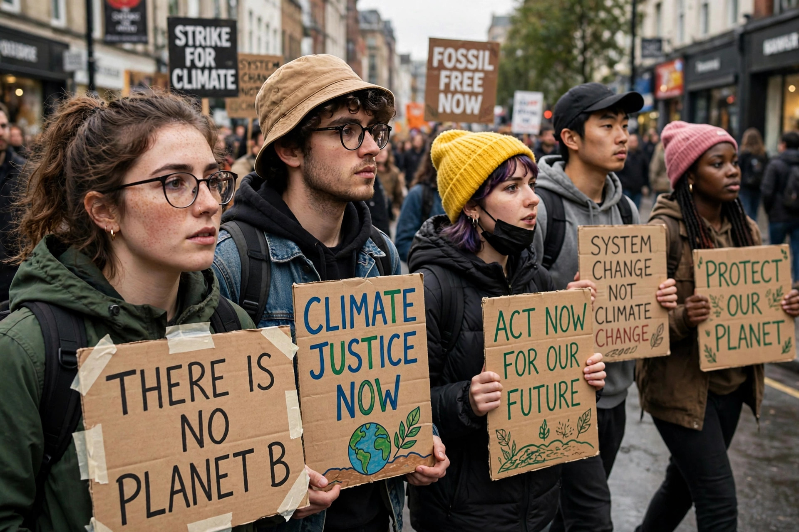

Youth politics is a category of politics engaged in by young people, and also the political engagement, movements, and issues that particularly concern or are advanced by youth. It encompasses the participation of young people in formal politics — voting, party youth wings, student politics — as well as informal and movement-based activity such as protests, campaigns, and online activism.

Young demonstrators marching with placards at a climate protest.
Organised youth politics developed in the nineteenth and twentieth centuries alongside mass political parties, many of which created youth wings to recruit and train younger members. Student movements became a major political force in the 1960s, with protests over civil rights, the Vietnam War, and university governance. In more recent decades, young people have been prominent in movements concerning climate change, gun control, and democratic reform, often organising through social media.
Most countries set the voting age at 18, though a small number, including Austria, allow voting at 16 in national elections, and debates about lowering the voting age recur in many democracies. Young voters have historically turned out at lower rates than older voters, a pattern often linked to political apathy, mobility, and weaker party attachment, though turnout among young voters has risen in several recent high-salience elections.
Political parties commonly maintain youth organisations — for example Young Labour in the United Kingdom or the Young Democrats and Young Republicans in the United States. Youth parliaments and councils give young people a consultative voice in some countries. Critics note that young people remain underrepresented among elected legislators, whose average age is typically far above that of the electorate.
Studies of youth political engagement published by electoral commissions and academic presses.